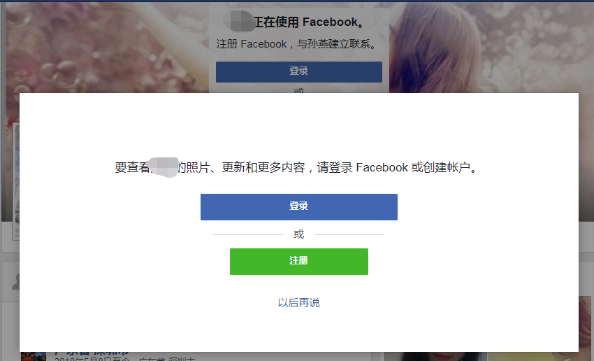
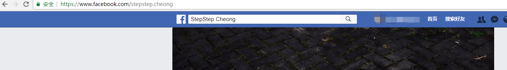
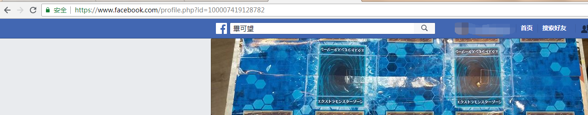
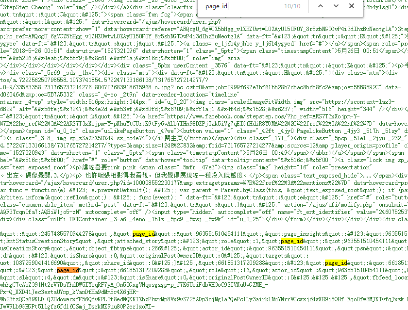
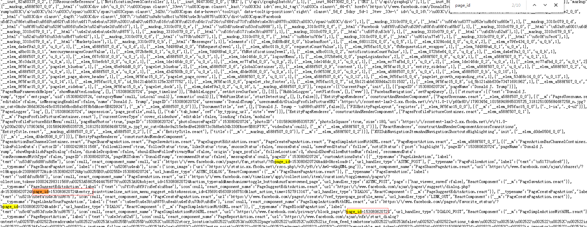
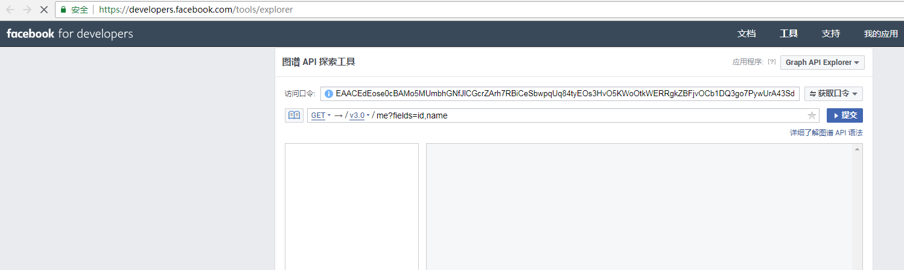

初次接触到scrapy是公司要求编写一个能够解析JavaScript的爬虫爬取链接的时候听过过，当时我当时觉得它并不适合这个项目所以放弃这个方案，时隔一年多公司有了爬取Facebook用户信息的需求，这样才让我正式接触并使用到scrapy
需求
- 首先从文件或者数据库导入第一批用户做为顶层用户，并爬取顶层用户好友的发帖信息包括其中的图片
- 将第一步中爬取到的用户好友作为第二层用户并爬取它们的发帖信息和好友信息
- 将第二层用户中爬到的好友作为第三层用户并爬取它们的好友信息
也就是说不断爬取用户的好友和它的发帖信息直到第三层为止
根据这个需求首先来确定相关方案
- 爬虫框架使用scrapy + splash：Facebook中大量采用异步加载，如果简单收发包必定很多内容是解析不到的，因此这里需要一个JavaScript渲染引擎，这个引擎可以使用selenium + chrome(handless) 这套，但是根据网上一位老哥的博客我知道了splash这种东西，在做相关比较之后我选择了使用splash，主要的理由有以下几点:
a. 与selenium比较起来，它的官方文档更为全面
b. 支持异步的方式，这个可以与scrapy的异步回调方式完美结合并充分发挥性能
c. 它提供了一套与scrapy结合的封装库，可以像scrapy直接yield request对象即可，使用方式与scrapy类似降低了学习成本
d. 它提供了lua脚本的方式可以很方便的操作浏览器对象
e. 跨平台。相比于使用chrome作为渲染工具，它可以直接执行在Linux平台
在scrapy中使用splash时可以安装对应的封装库scrapy_splash,这个库的安装配置以及使用网上基本都有详细的讲解内容，这里就不再提了
当然它也有缺点，但是这并不在讨论之中，至于具体如何选择就是一个见仁见智的问题了
2. 开发语言: python3 ，python在开发爬虫方面有独特的优势，这个就不用我多说了，弄过爬虫的朋友都知道
3. 开发工具 pycharm， JB的pycharm几乎是Python IDE的首选
设计与实现
这里可能涉及到商业秘密，毕竟是签过保密协议的，所以在这部分我不会放出完整的代码，只会提供一个思路然后给出部分关键代码以供参考。这里我想根据我遇到的问题，以问题的方式来讲述这个项目，毕竟对于爬虫、框架这些东西大家都很熟再来讲这些也没有多大意思了
用户登录
在浏览器中操作的时候发现，如果是游客（也就是未登陆状态）的时候，当我们浏览相关用户的时间线时会得到下面这个界面

在未登录的情况下查看用户信息的时候会弹出一个界面需要登录或者注册。因此从这里来看爬虫的第一个任务就应该是登录
登录的时候scrapy提供了一个form_response的方法可以很方便的填写表单并提交，但是我发现用这种方式只能在返回的response对象中的request.headers里面找到cookie的字符串，而由于splash需要我们传入cookie的字典形式，这里我没有找到什么很好的办法，只能是采用splash 提供的方法。
Facebook中登录页面为https://www.facebook/login。因此我重载爬虫的start_requests方法，提交一个针对这个登录页面url的请求。这个页面不涉及到渲染问题自然就使用Requests对象
1 | def start_requests(self): |
当它请求的页面返回时触发login方法，在这个方法中我们提供了一个lua脚本自动填写用户名密码，然后提交请求，并最终返回成功的cookie
1 | yield SplashFormRequest.from_response( |
这里我们使用splash来发送请求包，这里我们主要向lua脚本中传入用户名和密码,下面是lua脚本的相关内容
1 | function main(splash, args) |
根据相关资料，SplashRequest 函数中的参数将会以lua table的形式被传入到splash形参中，而函数的args参数中的内容以 table的形式被传入到形参args中，所以这里要获取到用户名和密码只需要从args里面取即可
上述lua代码首先请求对应的登录界面（我觉得这里应该不用请求，而直接使用response，但是这是我在写这篇文章的时候想到的还没有验证）,然后通过css选择器找到填写用户名，密码的输入框和提交按钮。然后填写相关内容，最后点击按钮进行登录，然后等待一定时间，这里一定要等待以便Facebook服务器验证并跳转到对应的链接，最后我们是通过链接来判断是否登录成功。最后返回当前页面的url，cookie和对应的头信息
在浏览器中执行登录操作的时候发现如果是新用户（没有填写相关信息用户）会跳转到www.facebook.com/?sk=welcome这个页面要求用户填入一定的信息，而老用户则会跳转到www.facebook.com 这个url，这个页面会显示用户关注的好友动态。因此在程序中我也根据跳转的新页面是否是这两个页面来进行判断是否登录成功的.登录成功后将脚本返回的cookie保存，脚本返回的信息在scrapy的response.data中作为字典的形式保存
代理
由于众所周知的原因，Facebook对于国内来说是一个404的站点，国内用户想要访问必须提供一个代理。
在scrapy中代理可以设置在对应的下载中间件中，在下载中间件的process_request函数中设置request.meta["proxy"] = proxy
但是这种方式针对splash时就不管用了，我找了很多资料发现可以在lua脚本中设置，每次在执行之前都需要相同的代码来设置代理，因此我们可以采用下面的模板
1 | function main(splash, args) |
每次执行含有这段代码的脚本时首先执行on_request函数设置代理的相关信息，然后执行splash:go函数时就可以使用上面的配置访问对应站点了
使爬虫保持登录状态
根据splash的官方文档的说明，splash其实可以看做一个干净的浏览器，就好像我们在使用浏览器每次请求一个新页面的时候同时清理了里面的缓存一样，它不会保存之前的任何状态，所以这里的cookie只能每次在发包的同时给它设置上，好在splash给了相应的方法来设置和获取它，下面是关于cookie的模板
1 | local cookies = splash:get_cookies() |
至此我们的lua脚本的模板就变成了这样
1 | function main(splash, args) |
获取用户主页面
我们在Facebook随便点击一个用户进入它的主页面，查看url如下


可以看到针对用户名为英文的情况，它简单的将英文名作为二级目录，只不过将空格换成了点，而针对不为英文的用户，它以profile作为二级目录，并且后面带上一个参数id，这个ID就是用户的ID。其实根据后面我自己的实验不管上面的哪种用户都可以通过这个ID访问到，我们可以组成一个url:https://www.facebook.com/[id] 来访问用户首页，因此项目中要求提供的外部导入用户名必须是英文或者是ID，以便能直接通过url拼接的方式来获取用户首页
除了这个区别之外，还有一种称之为公共主页的页面，比如下面是特朗普的公共主页
对于公共主页来说它没有好友信息，没有时间线，因此针对这种页面的信息的解析可能需要别的方法。而光从url、id、和页面内容来看很难区分，而我在查找获取Facebook用户ID的相关内容的时候碰巧找到了它的区分方法，公共主页的HTML代码中只有一个page_id和profile_id，而个人的只有profile_id 其中用户ID就是这个profile_id
比如下面分别是一个个人主页和公共主页搜索page_id的结果


从上面的结果来看个人用户中page_id 只会出现在注释中，这是用浏览器请求的结果，其实在实际使用爬虫爬取到的结果中是搜不到这个id的,我们可以根据这个特性来区分，并且获取这两种主页的ID
1 | def _get_user_info(self, html, url): |
获取时间线信息
Facebook的用户时间线是通过异步加载的方式来进行的，我使用Chrome分析过它发送的异步请求，发现它里面是经过了加密的，因此不能通过解析它的响应包来获取相关信息，但是我们有splash这一大杀器，它就是一个浏览器，一般在加载更多信息的时候都会执行下来操作，所以说这里我们只要模拟这个下拉的操作就可以了,要操作这个浏览器当然是使用lua脚本了，下面是对应的lua脚本
1 | function main(splash, args) |
上面的代码中，首先请求时间线的界面,然后获取相关的设置，主要是下拉次数。
注意这里的下拉次数要根据超时值来设置，根据splash的官方文档，每个请求都有一个超时值，大于这个超时值会直接返回504 的错误这个时候就什么都得不到了，所以这里理想情况下是可以一直下拉的，但是由于有超时值的存在，必须给定一个下拉次数。我们可以在启动splash 的时候通过参数–wait-timeout给定。
然后根据这个参数的设置一直下拉，直到没有更新或者达到最大下来次数。
这个也有问题，如果网络不好或者其他情况导致没有加载出来，就认为它已经没有新内容了，这样会导致爬取内容不全
这样我们就获取到了用户的时间线信息，具体的内容的解析就不再多说了，需要提醒一点的是，用户发帖中包含图片时分为三种情况，单个图片，多个图片（多个图片一般就被叫做albums——相册或者图集），简单的更新头像；这三种情况下页面的对应结构不同所以需要分情况，而且当时间线中包含视频的时候情况又不同
获取公共主页的发帖信息
公共主页中没有时间线，所以它的解析与个人主页的不同，好在Facebook提供了一种叫做图谱API的东西可以很方便的就可以获取到发帖信息。既然有这种API，为什么不用它获取个人用户信息呢？其实我也想用，就是要针对个人使用API就必须获取用户本人的确认，也就是要用户登录你的爬虫，然后授权给你，这自然是不可能的，所以针对个人用户只能简单的通过模拟浏览器的方式来解析HTML页面
要使用Facebook的 API首先要获取一个access_token. 常规思路是先去去开发者平台注册一个开发者账号并建立一个应用。然后获取应用的token。但是我发现一般的应用Token 在获取公共主页的时候也存在一个授权的问题，好在Facebook提供了一个api的测试平台，而平台中提供了一个graph explore token，这个token可以不用授权，但是它只有一个小时的有效期，所以要使用API，首先就是从这个测试平台获取到这token。Facebook并没有提供任何有效方法来获取这个token，这个时候自然又要使用传统的方式，通过splash请求这个url，然后解析HTML获取对应token。
针对这个问题，我处理的步骤如下：
- 根据上一步获取到的页面类型，如果是公共页面，则先请求https://developers.facebook.com/tools/explorer/这个url，在登录状态下（前提是你的对应账号是Facebook的开发者账号）,它会自动生成一个测试用的access_token就像下面这样

输入框中就是token - 从该页面中获取到对应的token, 并调用对应的API获取公共主页的发帖信息，这里主要调用posts 并获取它的链接、ID、具体信息、图片、创建时间和编辑者 这些信息，具体的API文档参考Facebook官方文档，这里就不再介绍他们了
1
2
3
4
5
6
7
8
9
10
11
12
13def get_access_token(self, response):
sel = Selector(response=response)
access_token = sel.xpath('//label[@class="_2toh _36wp _55r1 _58ak"]/input[@class="_58al"]//@value').extract_first() #获取到token的值
#拼接API
api = urljoin("https://graph.facebook.com/v3.0", response.meta["user_id"])
api = api + "/posts" + "?access_token=" + access_token + "&fields=link,id,message,full_picture,parent_id,created_time"
yield Request(
url=api,
callback=self._get_public_posts,
errback=self.error_parse
)
API返回的信息是以json格式返回的，下面是使用posts返回的一个例子，这里只是作为一个例子，请求返回的内容与项目中可能并不一样，但是并不影响针对它的分析
1 | { |
这个json主要分为两个部分一个是data，包含的是具体发帖的相关信息，另一个是paging，这个值里面包含了几个游标,其中next表示下一页的请求地址，我们只要判断出json中存在这个next就循环向这个next对应的url发包，当返回的json中不存在这个next时就标明已经到了最后一页。此时就解析了所有的发帖
下面是具体的代码
1 | def _get_public_posts(self, response): |
获取好友信息
获取好友的信息也需要采用模拟浏览器的方式，首先在用户页面上查找是否有好友的链接可以供点击，如果没有说明没有开放权限，当存在这个链接并点进去之后，可能并没有好友项，比如下面这样
或者另外的情况，所以这里判断是否有好友信息需要两步，第一步是上面部分有好友这一栏，第二步是点进去之后在下面一栏中有全部好友这项内容。
同样即使有好友，它也不会一次加载完毕，这里也用到下拉的相关操作。部分代码如下:
1 | function main(splash, args) |
执行完上述代码后,再分析是否有对应的好友信息,有的话就下拉刷新页面获取更多好友信息
1 | #当上面的代码执行完后进入这个函数 |
当下拉结束之后就是解析页面获取页面中的好友信息了，在解析的时候发现，当点击某个好友进入它的主页面时，页面的链接为 https://www.facebook.com/profile.php?id=100011359746168&fref=pb&hc_location=friends_tab这个时候就会产生一种想法，这个id是不是就是用户id呢？我用这个id来直接访问用户主页行不行呢？经过我的实验，这个想法是对的，是可行的，因此对于好友这层用户我们可以直接拿到它的ID，不用向前面一样根据名称来拼接,下面是解析好友信息的部分代码
1 | def parse_friends(self, response): |
反爬虫的相关操作
针对爬虫程序来说最头疼的就是有的站点在反爬虫这块做的太好了，Facebook就是这样的一个站点，我的测试账号在执行程序的时候被封过无数次。为了防止被封我主要采取了这样几个措施
减少并发数，设置发包的延时
这些内容主要在scrapy的配置文件中控制
1 | DOWNLOAD_DELAY = 5 # 发包延时 |
设置代理池
代理池的设置通过下载中间件的process_request函数来设置，设置的相关代码如下:
1 | def process_request(self, request, spider): |
这里虽然判断了是否为一个splash，但是针对splash的请求，这种设置方式无效，需要采用之前介绍的方式在LUA脚本中设置，而随机设置的方法就是在一组代理中随机选择一个传入对应的LUA脚本中
设置UA
在下载中间件的process_request函数中来设置，设置的方法与设置代理的方法类似
1 | class RotateUserAgentMiddleware(UserAgentMiddleware): |
设置多用户登录
这里我设置了多个登录用户，通过从用户的登录cookie池中随机选取一个作为请求的cookie，在爬虫开始位置导入多个用户的用户名和密码信息，依次登录，登录成功后保存用户cookie到列表，后面每次发包前随机选取一个cookie
设置SplashReuqests函数的等待时间
就像前面代码中每个SplashRequest函数的args参数中总会带有 一个wait的键值，这个表示每次接到请求后等待的时长，加上这个是为了减慢爬虫运行速度防止由于发包过快导致账号被封
至此，我已将之前涉及到的所有问题基本上都提到了，很多地方我自认为处理的不是很完美，但是写出来的内容勉强够用。
这个爬虫项目我最大的收获就是知道了splash这个好用的东西，可惜的是它并没有中文的文档，所以像我这样刚过四级的人读起来还是有点吃力的。所以为了方便他人学习，以及提高我的英文水平我决定乘着这段时间我有空闲我想翻译它的官方文档。目前项目刚刚开始，地址为:splash中文文档
PS: 不知道这个项目取这个名字会不会涉及到虚假宣传或者版权什么的，如果涉及到这些我会立马改名
最后的最后列举出项目中参考的文档，在整个项目中参考的文档实在太多，不会一一列举，这里只列举我印象最深的一些